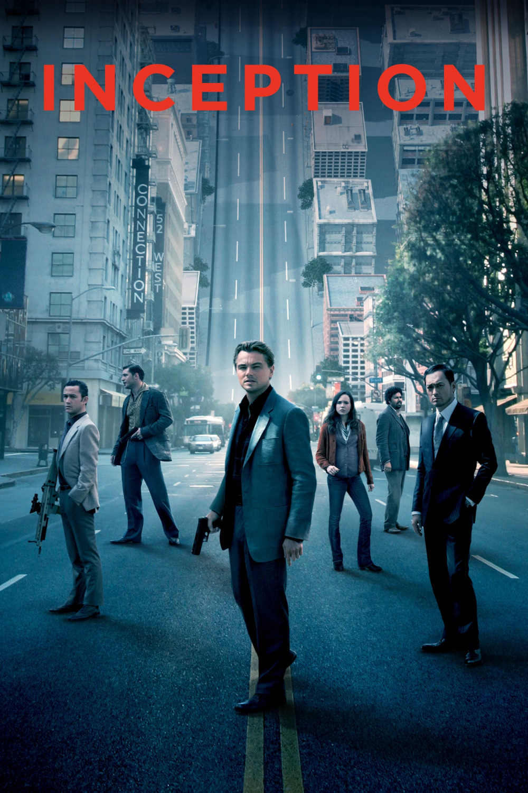

Мировая премьера: 16 июля 2010
Слоган: Твой разум – место преступления.
Сюжет: Кобб – лучший из лучших в непростом искусстве "извлечения": он крадёт ценные секреты из подсознания своих жертв во время сна, когда человеческий разум наиболее уязвим. Редкий дар сделал Кобба ценнейшим специалистом в мире промышленного шпионажа, но вместе с тем превратил в вечного беглеца и лишил всего, что было ему дорого. Однажды у него появляется шанс всё исправить, но для этого он должен совершить невозможное: внедрение идеи, а не её кражу. В случае успеха Кобб и его команда сумеют совершить идеальное преступление. Но даже чёткое планирование и мастерство не смогут подготовить их к встрече с опасным противником, который, кажется, предугадывает каждый их шаг. И предвидеть этого врага под силу лишь одному Коббу.
Режиссёр: Кристофер Нолан
В ролях: |
Леонардо ДиКаприо | Дом Кобб |
| Эллен Пейдж | Ариадна | |
| Джозеф Гордон-Левитт | Артур | |
| Том Харди | Имс | |
| Кен Ватанабе | Саито | |
| Марион Котийар | Мол Кобб | |
| Киллиан Мёрфи | Роберт Фишер | |
| Том Беренджер | Питер Браунинг | |
| Дилип Рао | Юсуф | |
| Майкл Кейн | Майлз | |
| Лукас Хаас | Нэш | |
| Талула Райли | Блондинка | |
| Пит Постлетуэйт | Морис Фишер |
Бюджет: $ 160 млн.
Кассовые сборы в США: $ 293 млн.
Кассовые сборы в мире: $ 840 млн.
Продолжительность: 2 ч. 21 мин.
Рейтинг: 8.8